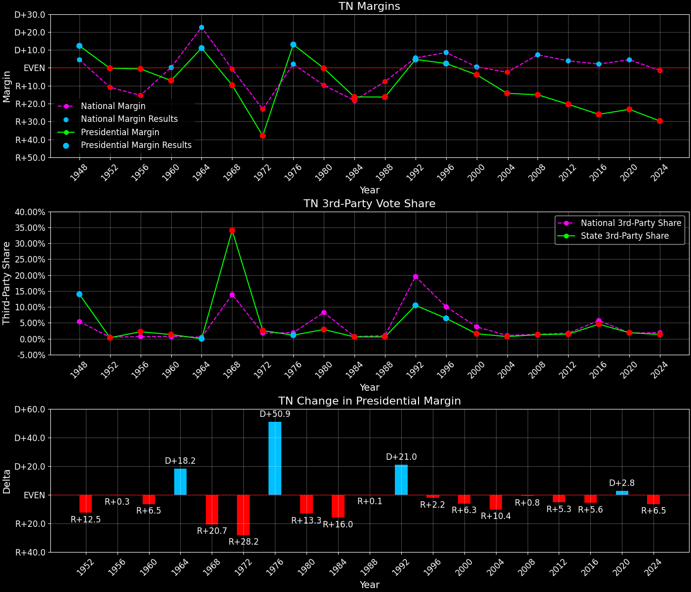
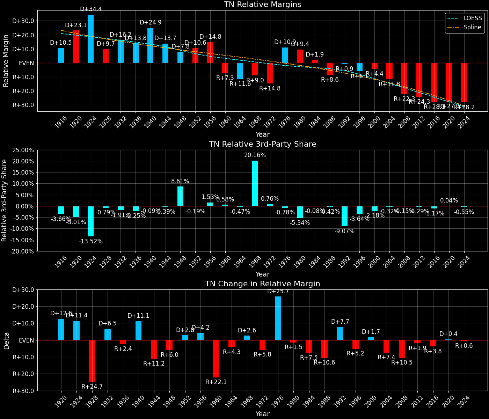
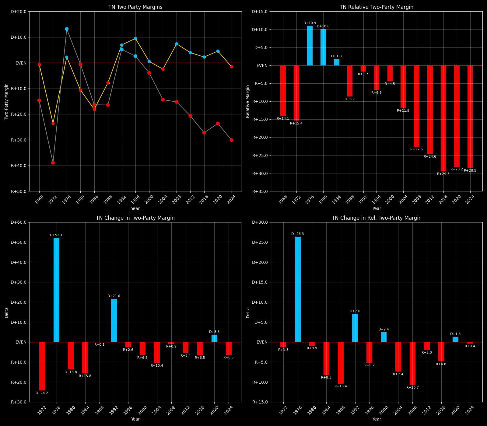

← Back to Map

Margins · 3P share · Pres. deltas

Relative margins · Relative 3P · Rel. deltas
Tennessee (TN) — Total Data
| Year | EVs | D | R | Margin | Rel. Margin | Nat. Margin | Margin Δ | Rel. Margin Δ | Nat. Margin Δ | Total votes |
|---|
| 1968 | 11 | 351,233(28.1%) | 472,592(37.8%) | R+9.7 | R+9.1 | R+0.6 | | | | 1,248,617 |
| 1972 | 10 | 357,293(30.5%) | 813,147(69.5%) | R+38.9 | R+15.4 | R+23.5 | R+29.2 | R+6.3 | R+23.0 | 1,170,440 |
| 1976 | 10 | 825,877(56.6%) | 633,969(43.4%) | D+13.1 | D+10.9 | D+2.2 | D+52.1 | D+26.4 | D+25.7 | 1,459,846 |
| 1980 | 10 | 783,101(48.3%) | 792,756(48.9%) | R+0.6 | D+9.3 | R+9.9 | R+13.7 | R+1.6 | R+12.1 | 1,622,661 |
| 1984 | 11 | 711,714(41.6%) | 990,212(57.8%) | R+16.3 | D+1.8 | R+18.1 | R+15.7 | R+7.5 | R+8.2 | 1,711,994 |
| 1988 | 11 | 679,794(41.8%) | 947,233(58.2%) | R+16.4 | R+8.7 | R+7.7 | R+0.2 | R+10.5 | D+10.4 | 1,627,027 |
| 1992 | 11 | 933,521(47.3%) | 841,300(42.6%) | D+4.7 | R+0.9 | D+5.6 | D+21.1 | D+7.8 | D+13.3 | 1,974,789 |
| 1996 | 11 | 909,146(48.4%) | 863,530(46.0%) | D+2.4 | R+6.1 | D+8.6 | R+2.2 | R+5.2 | D+3.0 | 1,878,594 |
| 2000 | 11 | 981,721(47.3%) | 1,061,949(51.2%) | R+3.9 | R+4.4 | D+0.5 | R+6.3 | D+1.7 | R+8.0 | 2,073,611 |
| 2004 | 11 | 1,036,474(42.5%) | 1,384,379(56.8%) | R+14.3 | R+11.8 | R+2.5 | R+10.4 | R+7.4 | R+3.0 | 2,437,281 |
| 2008 | 11 | 1,087,437(41.8%) | 1,479,179(56.9%) | R+15.1 | R+22.3 | D+7.3 | R+0.8 | R+10.5 | D+9.7 | 2,599,749 |
| 2012 | 11 | 960,709(39.1%) | 1,462,330(59.5%) | R+20.4 | R+24.3 | D+3.9 | R+5.3 | R+1.9 | R+3.4 | 2,458,577 |
| 2016 | 11 | 870,695(34.9%) | 1,522,926(61.1%) | R+26.1 | R+28.3 | D+2.1 | R+5.7 | R+4.0 | R+1.8 | 2,494,237 |
| 2020 | 11 | 1,143,506(37.5%) | 1,851,770(60.7%) | R+23.2 | R+27.7 | D+4.4 | D+2.9 | D+0.6 | D+2.3 | 3,052,097 |
| 2024 | 11 | 1,056,265(34.5%) | 1,966,865(64.2%) | R+29.7 | R+28.2 | R+1.5 | R+6.5 | R+0.5 | R+6.0 | 3,063,942 |
Column explanations
- Year
- Election year.
- EVs
- Number of electoral votes allocated to this state or unit.
- D
- Number of votes for the Democratic candidate (raw count(pct%)).
- R
- Number of votes for the Republican candidate (raw count(pct%)).
- Margin
- Margin between the two major-party candidates, including third-party votes ((D - R)/total).
- Rel. Margin
- The presidential margin relative to the national presidential margin (Margin - Nat. Margin).
- Nat. Margin
- The national presidential margin for that year, including third-party votes ((D_total - R_total)/total_votes).
- Δ
- Change (delta) in the value from the previous election year. Blank if no data for previous year.
- Total votes
- Total voter turnout or ballots cast (when provided).
Tennessee (TN) — Third-Party Data
| Year | Other votes | 3rd Party Share | 3rd Party Nat. Share | 3rd Party Rel. Share |
|---|
| 1968 | 424,792(34.0%) | T+34.0 | T+13.6 | T+20.4 |
| 1972 | 0(0.0%) | | T+0.1 | T-0.1 |
| 1976 | 0(0.0%) | | T+0.3 | T-0.3 |
| 1980 | 46,804(2.9%) | T+2.9 | T+7.0 | T-4.1 |
| 1984 | 10,068(0.6%) | T+0.6 | T+0.1 | T+0.5 |
| 1988 | 0(0.0%) | | T+0.2 | T-0.2 |
| 1992 | 199,968(10.1%) | T+10.1 | T+19.2 | T-9.1 |
| 1996 | 105,918(5.6%) | T+5.6 | T+9.7 | T-4.0 |
| 2000 | 29,941(1.4%) | T+1.4 | T+3.7 | T-2.2 |
| 2004 | 16,428(0.7%) | T+0.7 | T+0.8 | T-0.2 |
| 2008 | 33,133(1.3%) | T+1.3 | T+1.4 | T-0.1 |
| 2012 | 35,538(1.4%) | T+1.4 | T+1.6 | T-0.2 |
| 2016 | 100,616(4.0%) | T+4.0 | T+5.5 | T-1.5 |
| 2020 | 56,821(1.9%) | T+1.9 | T+1.8 | T+0.0 |
| 2024 | 40,812(1.3%) | T+1.3 | T+1.9 | T-0.5 |
Column explanations
- Year
- Election year.
- Other votes
- Number of votes for third-party (other) candidates (raw count(pct%)).
- 3rd Party Share
- Share of the vote received by third-party (other) candidates.
- 3rd Party Nat. Share
- The national third-party share for that year (3P votes / total votes).
- 3rd Party Rel. Share
- Third-party share relative to the national third-party share (3P share - Nat. 3P share).

Two-party margins · relative · deltas
Tennessee (TN) — Two-Party Data
| Year | 2-Party Margin | 2-Party Nat. Margin | 2-Party Rel. Margin | 2-Party Margin Δ | 2-Party Nat. Margin Δ | 2-Party Rel. Margin Δ |
|---|
| 1968 | R+14.7 | R+0.7 | R+14.1 | | | |
| 1972 | R+38.9 | R+23.6 | R+15.4 | R+24.2 | R+22.9 | R+1.3 |
| 1976 | D+13.1 | D+2.2 | D+10.9 | D+52.1 | D+25.8 | D+26.3 |
| 1980 | R+0.6 | R+10.6 | D+10.0 | R+13.8 | R+12.8 | R+0.9 |
| 1984 | R+16.4 | R+18.1 | D+1.8 | R+15.8 | R+7.5 | R+8.3 |
| 1988 | R+16.4 | R+7.8 | R+8.7 | R+0.1 | D+10.4 | R+10.4 |
| 1992 | D+5.2 | D+6.9 | R+1.7 | D+21.6 | D+14.7 | D+7.0 |
| 1996 | D+2.6 | D+9.5 | R+6.9 | R+2.6 | D+2.6 | R+5.2 |
| 2000 | R+3.9 | D+0.5 | R+4.5 | R+6.5 | R+8.9 | D+2.4 |
| 2004 | R+14.4 | R+2.5 | R+11.9 | R+10.4 | R+3.0 | R+7.4 |
| 2008 | R+15.3 | D+7.4 | R+22.6 | R+0.9 | D+9.8 | R+10.7 |
| 2012 | R+20.7 | D+3.9 | R+24.6 | R+5.4 | R+3.4 | R+2.0 |
| 2016 | R+27.2 | D+2.2 | R+29.5 | R+6.5 | R+1.7 | R+4.8 |
| 2020 | R+23.6 | D+4.5 | R+28.2 | D+3.6 | D+2.3 | D+1.3 |
| 2024 | R+30.1 | R+1.6 | R+28.5 | R+6.5 | R+6.1 | R+0.4 |
Column explanations
- Year
- Election year.
- 2-Party Margin
- Margin between the two major-party candidates, ignoring third-party votes ((D - R)/(D + R)).
- 2-Party Nat. Margin
- The national presidential margin for that year, including third-party votes ((D_total - R_total)/total_votes).
- 2-Party Rel. Margin
- The presidential margin relative to the national presidential margin (Margin - Nat. Margin).
- Δ
- Change (delta) in the value from the previous election year. Blank if no data for previous year.